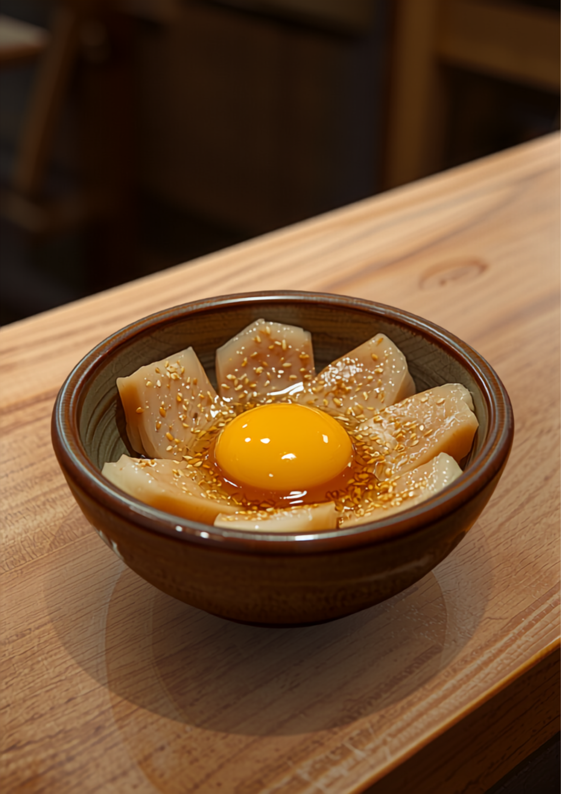

旬のメニューが季節ごとに替わるから、「毎回行くのが楽しみ」と言われる居酒屋です。入口を開けるなり明るい大将と、何を頼んでも外さない品書きでお待ちしています。
今夜の席を電話で聞く
名物・卵黄で食べる胡麻カンパチ実際に来た人の声から、季節の楽しみを拾いました。今の品書きはカウンターでどうぞ。
旬のメニューが替わる季節の始まり。「季節によってメニューが変わるので、私の好きなニラ豚はありませんでした！が！」と、お目当てが替わっていてもすぐ次の推しが見つかるのがはまちゃんです。
これでもかと冷えたグラスのビールに、トマトスライスやナスの煮浸しのような、するっと入る一品を。串は夏も変わらずおまかせで。
「大根…？特に好きじゃないな…と思っていた私を殴りたい！なんなら1番美味しかった！」という口コミを生んだ一品も、季節の品書きから生まれました。次の意外な主役を探しに来てください。
2日前までの予約制。「ネギがネギ臭くなくて最高に美味しい」と評判の冬の主役です。湯豆腐やおでんの盛り合わせ、正月限定の刺身盛りも冬の楽しみ。〆はうどんか雑炊で。
季節の品書きは仕入れで替わります。「今、何がおすすめ？」の一言から始めてください。
「何を食べても美味しく、大正解なお店でした！」
Googleの口コミより
「一品一品盛り付けがキレイで食べるのがもったいないくらい。とても美味しかったです」
Googleの口コミより
「とにかくお店の方が入口を開けるなり明るくて感じが良く、誰もが釣られて入店しそうです」
Googleの口コミより
「からあげの味付けすごく美味しくてびっくりしました。子供も食べれるメニューがあるのは大変助かります！！」
Googleの口コミより
「ニラ豚（普通の串より工夫してあるのが嬉しい）がめちゃくちゃ美味しかったです！」
Googleの口コミより
ポテト・からあげ・麺と、子供が食べられるメニューがあります。塩ラーメンをおかわりした子も。
カウンターで大将と話しながら。胡麻カンパチと日本酒の相性は口コミお墨付きです。
掘りごたつ・座敷で最大20名まで。ねぎしゃぶ鍋の宴会は2日前までにご予約を。